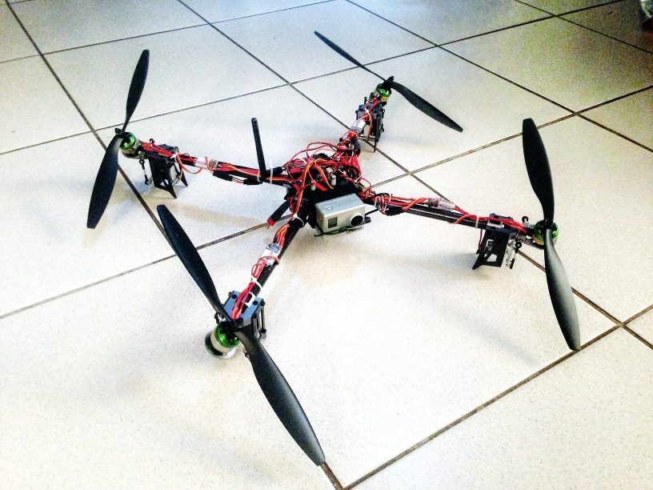

This page quickly presents a unique multicopter UAV configuration imagined and developped by Vincent Lecrubier between 2006 and 2013.
The original idea of the Agile copter is to have a UAV with 6 spatial degrees of freedom (3 translations and 3 rotations). While most UAVs allow to directly control 3 rotational degrees of freedom (pitch, yaw and roll), no UAV allows to directly control more than 1 translational degree of freedom: fixed wing allow to control longitudinal movement, and rotorcraft allow to control vertical movement. Some VTOL configurations allow to control 2 translational degreees of freedom: longitudinal and vertical, but not lateral movement is directly controllable independently of the attitude. The Agile copter has 6 degrees of freedom, and it can have any attitude while also having a non-corelated translation motion.
A study of a tri-rotor agile copter configuration was performed at ISAE in 2007 by Vincent Lecrubier and Yann Ameho. From there, continued the developpement of the Agile copter as a side project. Developpment included the design of a tilt mechanism, simulations and control law synthesis using simulink, and integration. Finally, a four rotor version of the agile copter took its first flight in late 2012.
Explanation of the principles of the agile copter were provided by Vincent Lecrubier on the Open pilot forums in 2011-2012. Unfortunately, the forums are now down. 3D visuals clearly showing a UAV with independently tilted rotors were created by Vincent Lecrubier in early 2007 and uploaded to wikipedia (Link to wikipedia archive from 2007)
The principle of the agile copter has since been patented by an unrelated team in 2013 (Google patent).
For more information and requests, contact Vincent Lecrubier